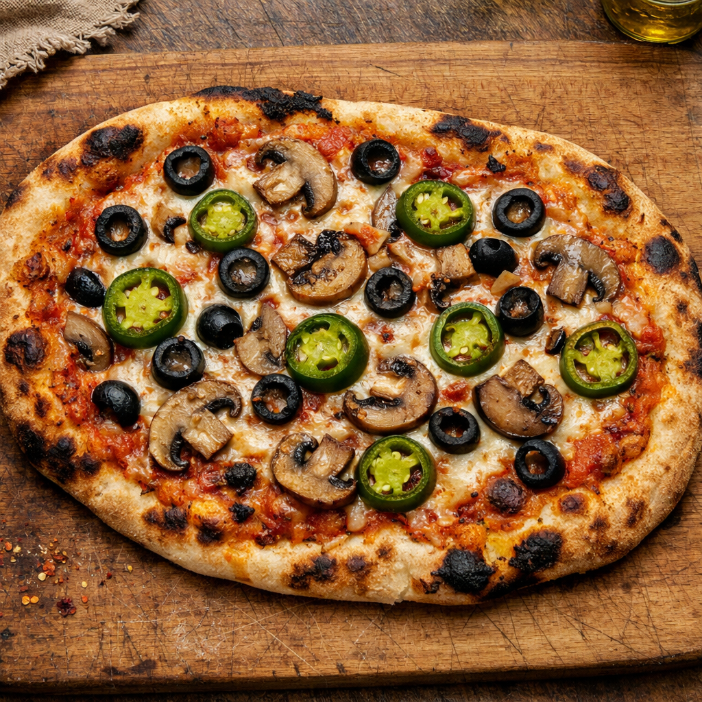

Home
Pizza Recipe

Description
This is a quick and easy recipe for making a great homemade pizza. It uses only 6 ingredients for the base, and is fun to customise and play around with.
The ingredients are;
- All-purpose flour.
- Sugar. Honey works very well in place of sugar.
- Olive oil. Any neutral tasting oil works perfectly in this recipe, I suggest olive oil, avocado oil or canola oil.
- Water (warmed to 105 degrees F (600W for around 50 secs)).
- Salt - sea salt best if possible.
- Yeast - an integral part of bread-making.
- Pizza Sauce - see here for my quick, easy, and delicious tomato pizza sauce recipe.
- Toppings: I'm a veggie at heart and my personal favorite is black olives, mushroom, and jalapeno.
Steps;
- Preheat oven to 260 degrees celcius. If pizza stone, preheat that too for 10 mins before cooking.
- Combine warm water, yeast and sugar in a large mixing bowl and stir to combine.
- Let mixture sit for 5 minutes, or until it becomes frothy and bubbles form.
- Gently stir in olive oil.
- Add 240-250 grams of flour and salt and mix with a spatula until a ball begins to form (dough will still be slightly sticky). Add more flour as needed to form a dough ball.
- Transfer to a floured surface and knead into a smooth dough, adding up to 60-65 grams extra flour if needed.
- Cover the bowl with a damp tea towel and let it rise for 10 minutes or up to 1 hour.
- Roll the dough into your desired shape and put it on a piece of parchment paper.
- Add pizza sauce, cheese and toppings of choice.
- Bake in the oven for 11-14 minutes at 260 degrees celcius.